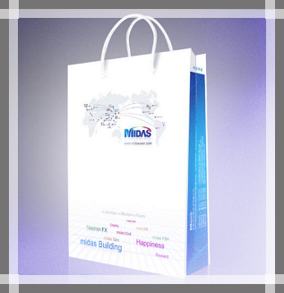

塑料手提袋的印刷流程？中国印告诉你中国印 2018-11-01 17:44
← Sidebar Menu Thingy
铜版纸手提袋在生活中是应用非常广泛的产品，流通性比较大，不少单位、企业或者商家看重了里面的流通性，都愿意去定做自己品牌的铜版纸手提袋，在上面印刷自己的Logo、或者广告语，起到一个很好的宣传效果，那么你对铜版纸手提袋的印刷流程了解多少呢?下面由中国印小编为你讲解：
 制版是指根据客户的要求制作原版(备印刷时用)一般通用的原版有电雕版、铜版、胶版、丝网版，最常用的是铜版。 吹膜是指将塑料颗粒加热融化再吹成薄膜的一种塑料加工工艺，是塑料袋制作的第一步。是用新塑料颗粒料吹出的薄膜，色泽光亮、干净卫生、成品拉伸好、承受的重量大，因而用这种膜制成的塑料袋的质量好，可以用于食品包装，不用担心其安全问题。 彩印方式多样，最常用的是铜版印刷 还有凹版印刷、丝网印刷。 丝网印刷方式的步骤是先将成卷薄膜裁切成单块，然后人工单个印刷。这种人工印刷速度慢，但这样制作出的铜版纸袋文字图案墨迹厚，立体感强。 铜版印刷 凹版印刷是将已经吹好的铜版纸薄膜整卷印刷，是将已经制作好的原版放在机械上进行印刷，这种机械印刷速度非常快，非常适合大批量的塑料袋生产，现在制作塑料袋的厂家基本都是用机械印刷，很少再用人将铜版印刷、凹版印刷好的薄膜采用制袋机烫制、切割成塑料袋;如果是丝网印刷好的单个塑料块则须人工烫制，工具有电烙铁、热合机等。但这种方式太慢，而且耗费人力，很早之前已经被淘汰，目前塑料袋普遍使用制袋机烫制、切割。
以上就是手提袋制作的详细流程啦，希望上面的方法能够帮助到大家。